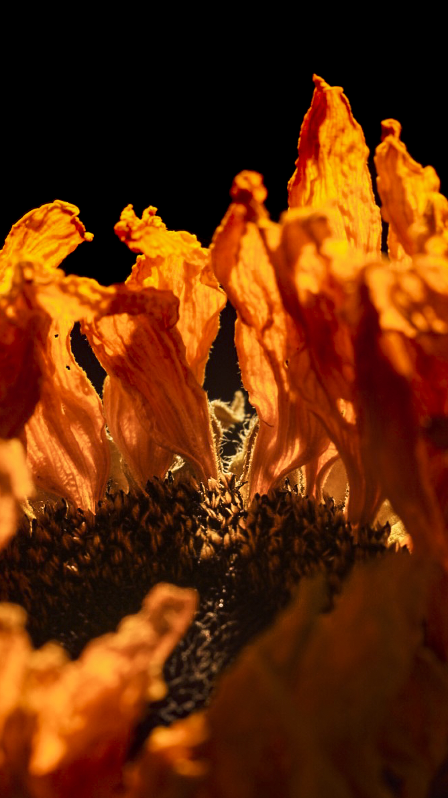
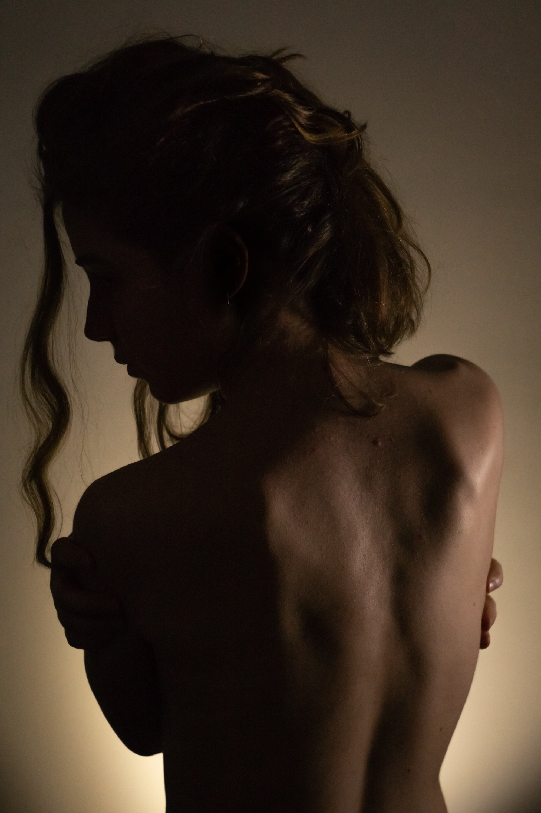

Visual Work
Photography & Videography — Academic Projects (MSc, 2019–2022)
Work produced during the MSc in Cinema and Multimedia Engineering at Politecnico di Torino. Included here as academic evidence of applied visual skills — composition, cinematography, color grading — not as a current creative practice.
Videography
Le parti in gioco
Short film · Digital Photography course, Politecnico di Torino
2020
End-to-end student production. Role: Director of Photography and Color Grading.
Director
Mara Lupano
Mara Lupano
Producer
R. I. Rauber Mendoza
R. I. Rauber Mendoza
Photography & Color
Leonardo Vezzani
Leonardo Vezzani
Editing
Jacopo Fiorenza
Jacopo Fiorenza
Asst. Director
Beatrice Gemmi
Beatrice Gemmi
Audio
Gaia Brugo
Gaia Brugo
Scenography
Roberta Filippelli
Roberta Filippelli
Makeup
Elisa Ghigone
Elisa Ghigone
Cinematography
Color grading
Short film
PoliTo coursework
Photography
Selected stills from coursework and personal practice during the degree period. Subjects: portrait, environmental, low-key light studies.





